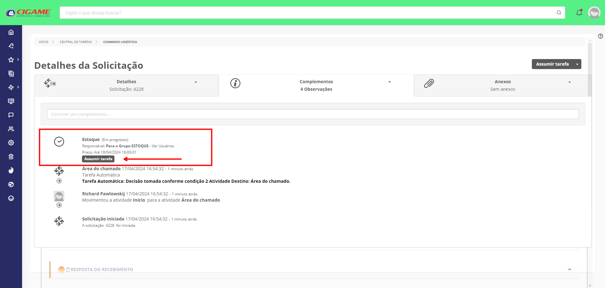

Lembrete - A partir das 16h usuário "Eduardo Pastoriza" deverá assumir as demandas do chamado Logística destinado para área "Estoque"
Instrução para assumir a tarefa:
Acessar a solicitação;
Clicar em "Complementos";
Clicar em assumir tarefa.
Observação: Você encontrará o Fluig nas suas notificações no canto superior direito
